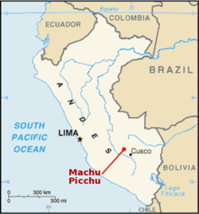
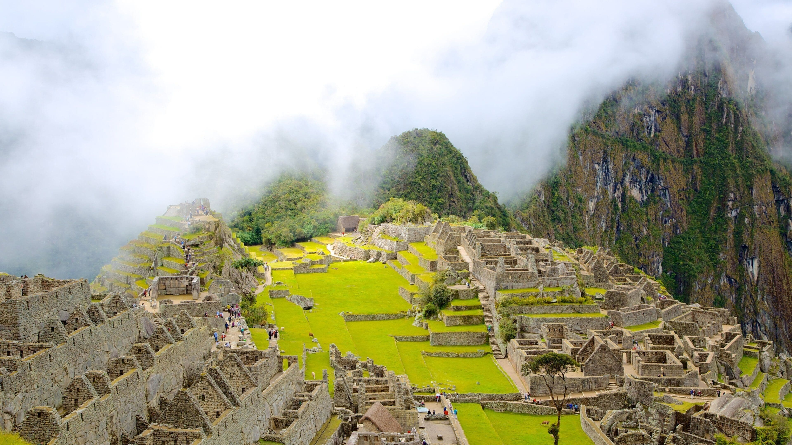
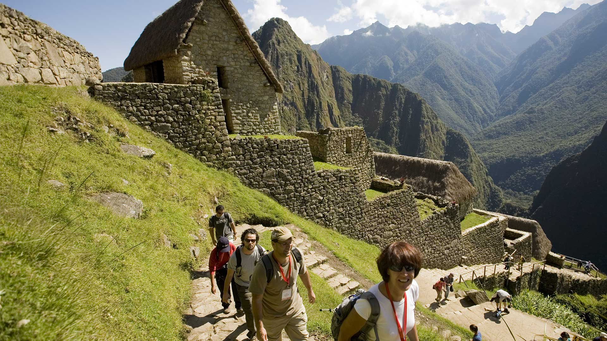
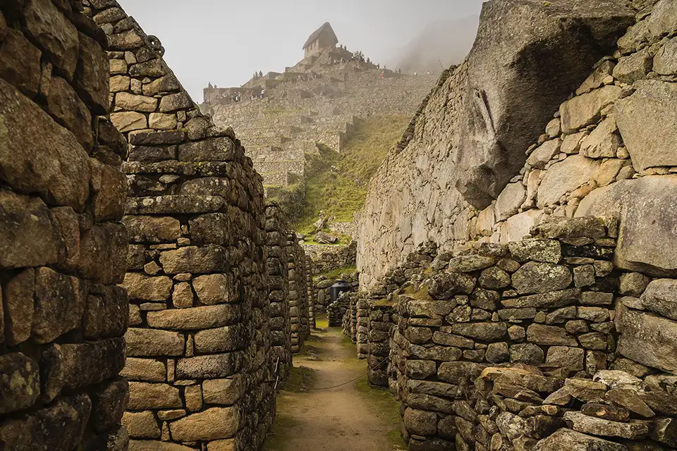

Machu Picchu: la città perduta tra le nuvole
E' soprannominata la città perduta degli Inca, è sito archeologico precolombiano, situato in una
zona montana a circa 2.350 metri di altitudine nella valle dell'Urubamba in Perù

Un po di storia
Si suppone che la città fosse stata costruita dall'imperatore inca Pachacútec intorno all'anno
1440 e sia rimasta abitata fino alla conquista spagnola del 1532. La posizione della città era un
ben custodito segreto militare, perché i profondi dirupi che la circondavano erano la sua migliore
difesa naturale. Difatti, una volta abbandonata, la sua ubicazione rimase sconosciuta per ben
quattro secoli, entrando nella leggenda. Scoperte archeologiche, unite a recenti studi su
documenti coloniali, mostrano che non si trattava di una normale città, quanto piuttosto di una
specie di residenza estiva per l'imperatore e la nobiltà Inca. Si è calcolato che non più di 750
persone alla volta potessero risiedere a Machu Picchu, e probabilmente durante la stagione
delle piogge o quando non c'erano nobili, il numero era ancora minore.

La scoperta
La città fu riscoperta il 24 luglio 1911 da Hiram Bingham, uno storico di Yale, che stava
esplorando le vecchie strade della zona alla ricerca dell'ultima capitale Inca: Vilcabamba.
Bingham compì parecchi altri viaggi ed eseguì scavi fino al 1915 e solo più tardi si rese conto
dell'importanza della sua scoperta e si convinse che Machu Picchu era Vilcabamba. Di ritorno
dalle sue ricerche scrisse parecchi articoli e libri su Machu Picchu: il più conosciuto fu; La città
perduta degli Inca. Paradossalmente Vilcabamba non era Machu Picchu: l'ultima capitale era a
Espiritu Pampa: nascosta nella giungla, a poche centinaia di metri da dove era arrivato lui
durante le sue ricerche.

Machu Picchu oggi
Il sito archeologico fa parte dei Patrimoni dell'umanità stilati dall'UNESCO.
La località è oggi universalmente conosciuta sia per le sue imponenti ed originali rovine, sia per
l'impressionante vista che si ha sulla sottostante valle dell'Urubamba circa 400 metri più in
basso.
